A real shop, from messy rows to actions. This is a beginner friendly story about a UK online gift shop, told with real sales rows from December 2010 to December 2011. Every idea is explained before it is used. Every number carries its limit with it.
Source: UCI Machine Learning Repository, Online Retail II, dataset 502, by Daqing Chen (2012). This build uses the December 2010 to December 2011 slice, 541,909 rows. The full UCI file covers 2009 to 2011 and has 1,067,371 rows. See data/raw/PROVENANCE.md in the project folder.
Each row is one line on one receipt. Real data are messy. The largest mess here is rows with no customer: 135,080 raw rows have no CustomerID. Those rows are counted, not hidden, and they are left out of customer work, because customer work needs a customer.
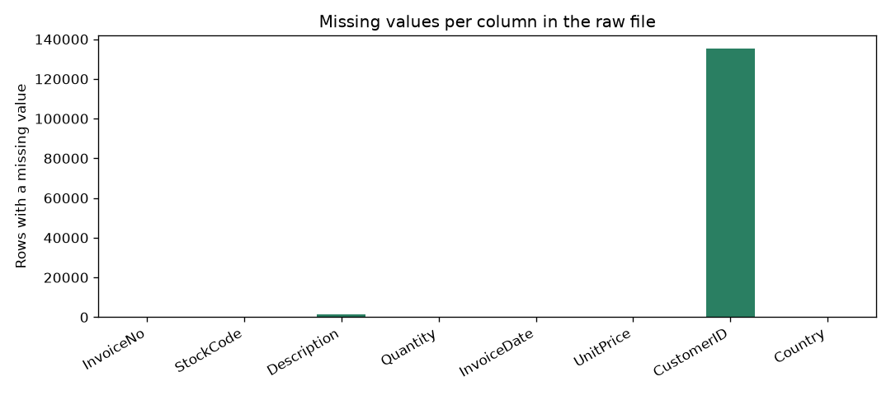
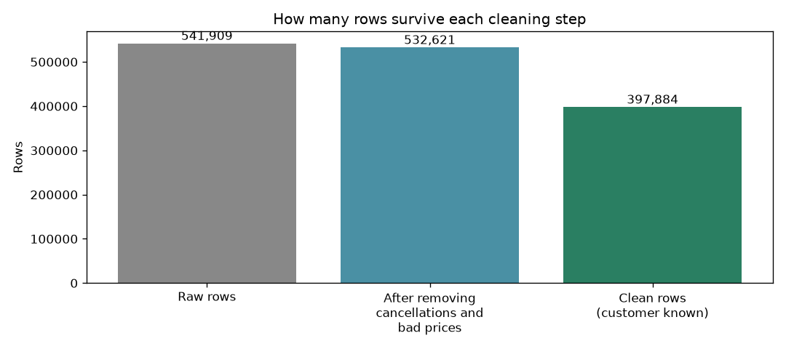
Sales rise into autumn. November 2011 is the best complete month, at 1,161,817.38 pounds. February 2011 is the quietest complete month, at 447,137.35 pounds. Thursday is the strongest weekday, and midday is the busiest time. December 2011 looks low only because data stop on 9 December 2011. It is a partial month, not a collapse.
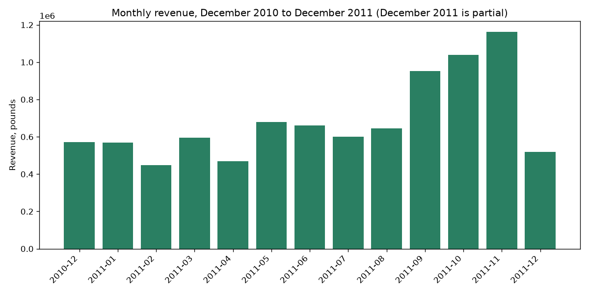
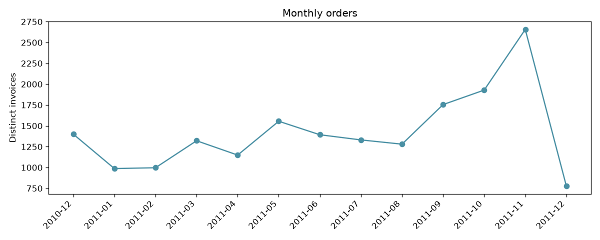
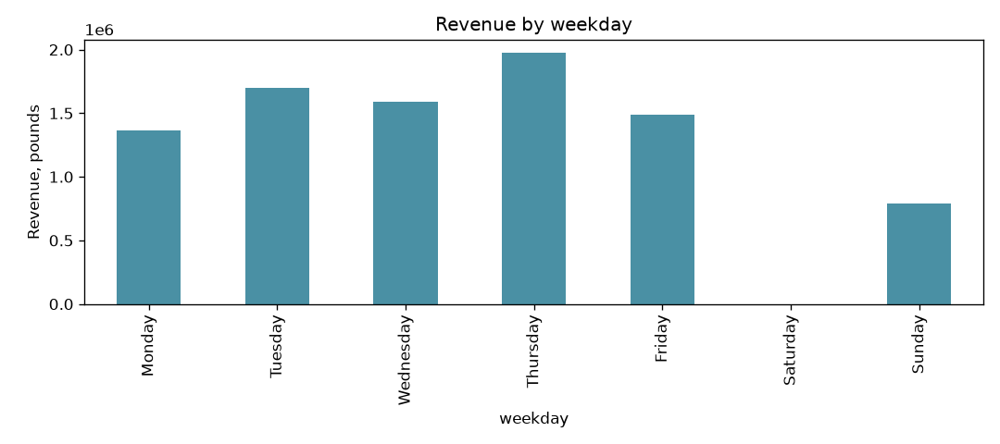
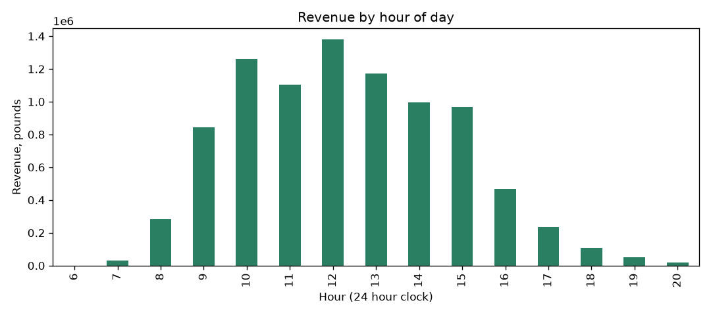
Mostly, from home. The United Kingdom accounts for 7,308,391.55 pounds, or 82.01 percent of clean revenue. The next markets are far smaller: Netherlands, 285,446.34 pounds, and EIRE, 265,545.90 pounds. The top product is PAPER CRAFT, LITTLE BIRDIE, at 168,469.60 pounds.
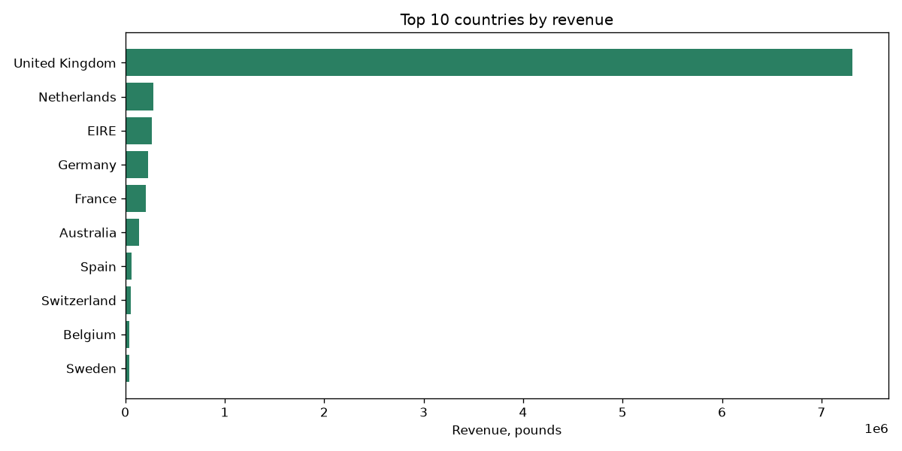
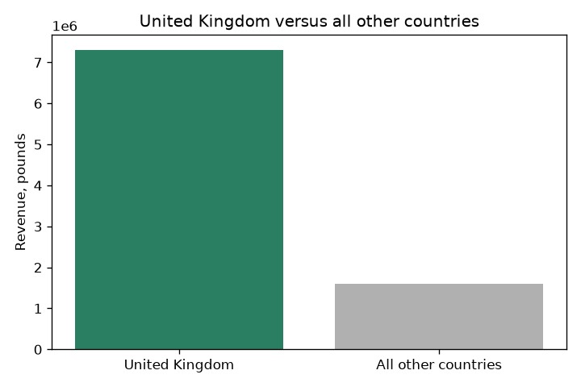
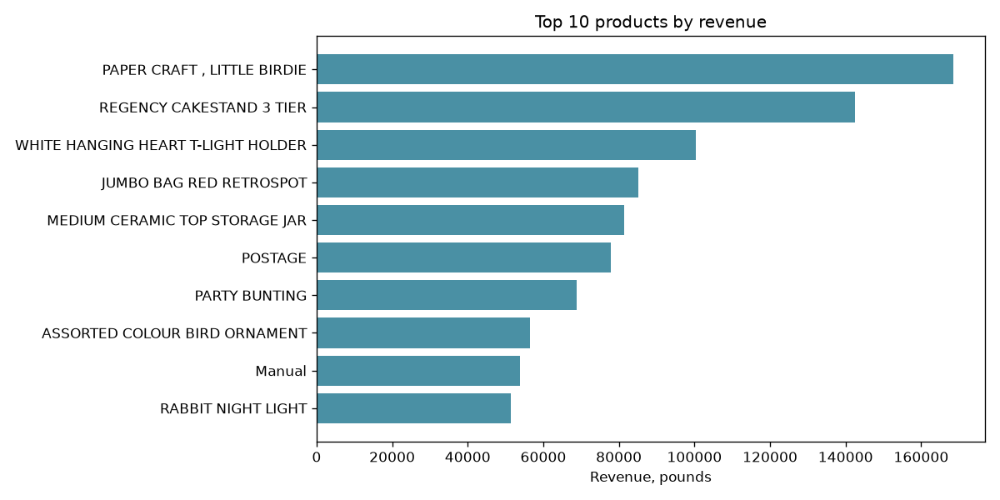
Note: POSTAGE in the product list is a delivery charge, not a gift. It stays in the totals so totals match, and it is flagged in notebook 03.
RFM is three simple ideas. Recency: how many days since the last order. Frequency: how many orders. Monetary: how much spent in total. Each customer gets a score from 1 to 4 on each idea, and the scores make six segments.
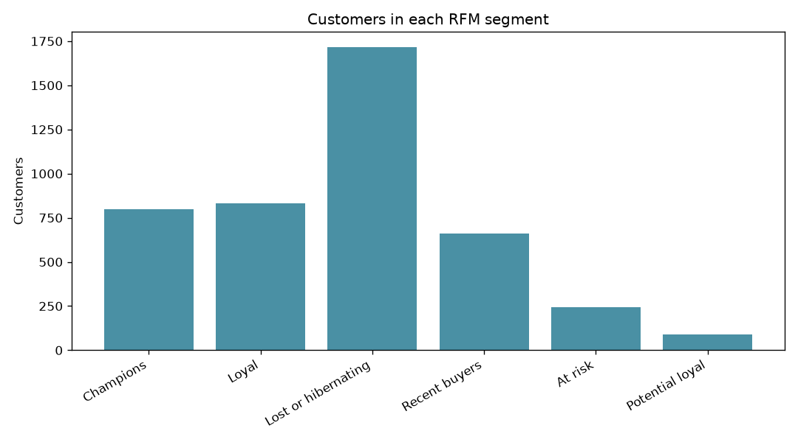
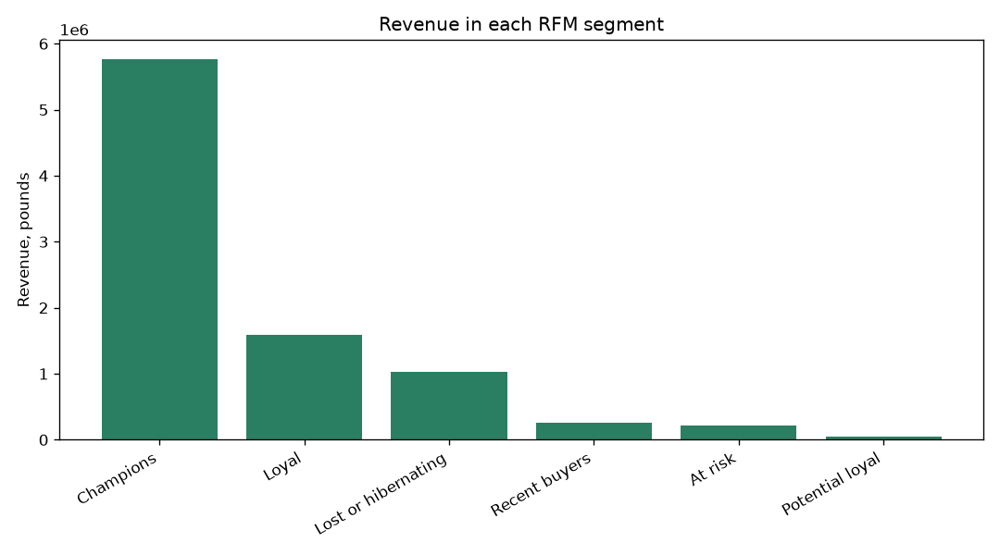
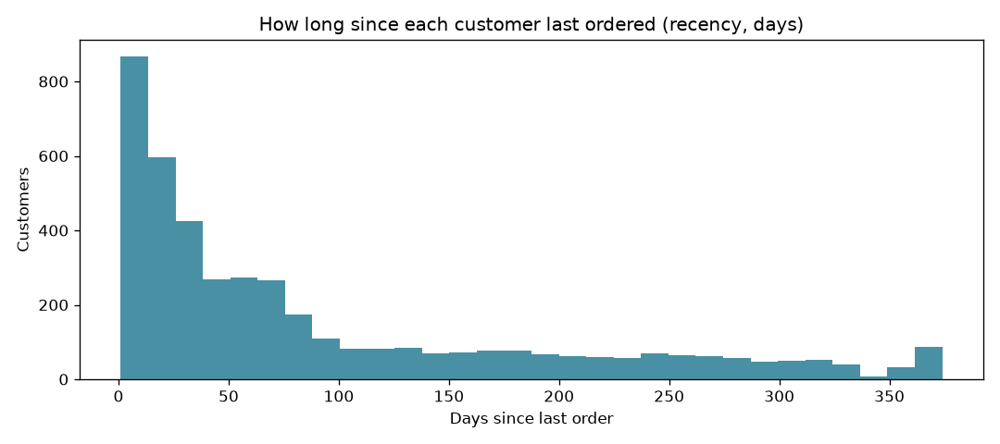
The forecast here is the average of the last three complete months. It is simple on purpose, so anyone can check it. Tested on September, October, and November 2011, it missed by 33.3, 29.5, and 24.3 percent, for an average miss of 29.0 percent. It missed low each time, because sales were rising. The next month forecast on that method is 1,051,324.85 pounds. Quote it only with the 29.0 percent miss.
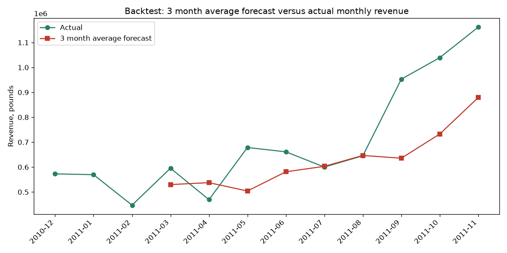
A fixed 90 day cutoff treats a weekly buyer and a yearly buyer the same way. That is unfair. The Recency Gap Ratio compares a customer with themselves: days since last order divided by the median gap between their own past orders. Above 2 means they waited more than twice as long as usual. Among 2,760 customers with a usable ratio, 18.6 percent are above 2, and 12.2 percent are above 3. This is a warning signal to check in first, not a proven churn prediction, and not a reason to discount blindly.
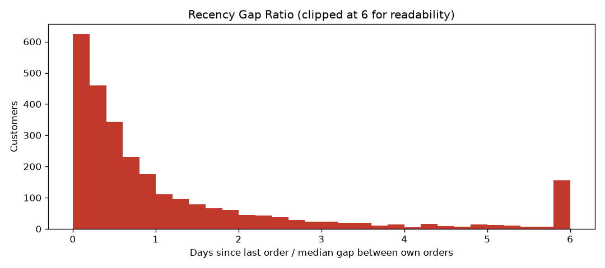
A simple two year customer value estimate (average order value times orders per year times 2) gives a median of 3,997.70 pounds for repeat customers. It assumes the past rate continues, and it ignores costs, so use it to rank care, not to book revenue.
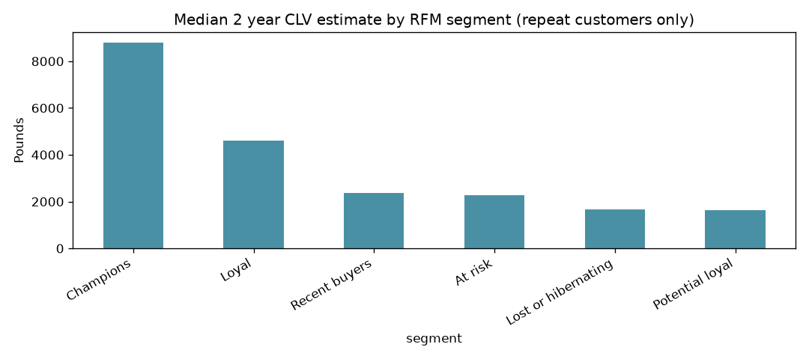
Most customers come back at least once: 65.58 percent ordered more than once, and 34.42 percent ordered only once. Turning a recent buyer into a second buyer is the cheapest growth in this data.
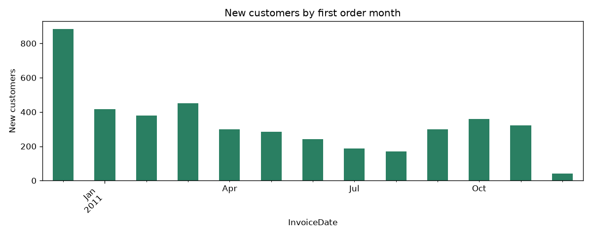
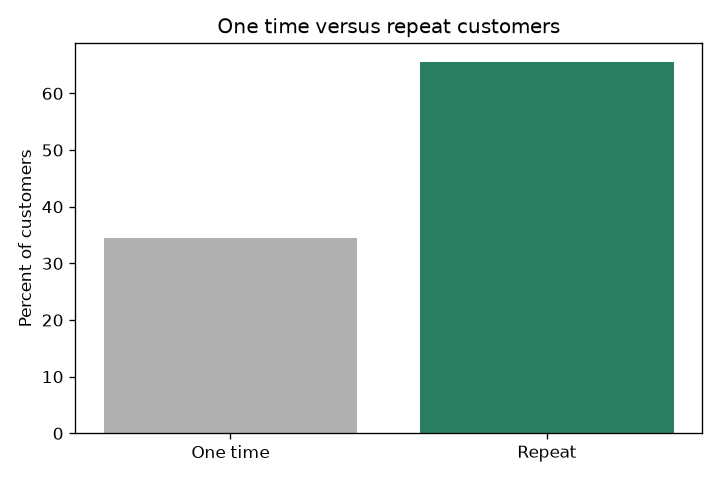
Original repo: github.com/jwavalosq/datanalytics
Rebuild: run python scripts/download_data.py, then python scripts/build_processed.py, then execute notebooks 01 to 06 in order. Full details are in README.md and BUILD_REPORT.md in the project folder.
Methods credit: RFM quartile scoring and the 3 month moving average are standard public methods, credited in the README. The Recency Gap Ratio is the original metric of this project.